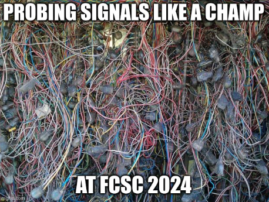

Challenge #411
Very Cute Data
Ce challenge a pour objectif de vous introduire à l’analyse de capture de signaux
électroniques numériques à l’analyseur logique. La capture qui vous est fournie est au
format vcd (pour Value Change Dump, voir ici pour plus d’information).
Vous pouvez l’ouvrir avec les
logiciels
pulseview ou GTKWave pour une visualisation des signaux. Vous
pouvez également
utiliser la bibliothèque Python pyDigitalWaveTools.vcd pour manipuler ces
fichiers
(d’autres bibliothèques existent aussi).
La capture est constituée de deux signaux numériques D0 et D1
: le premier
correspond à des données binaires, le second est une horloge. Dans beaucoup de
protocoles de bus de communication, les signaux numériques représentent des données
échantillonnées (“samplées”) sur des fronts d’horloge : cette épreuve va vous permettre
de vous familiariser avec ce concept. Le signal de données qui nous intéresse ici, à
savoir D0, est échantillonné sur les fronts descendants de
l’horloge :
lorsque
D1 passe de 1 à 0, l’état de D0
correspond à la valeur à
retenir à cet échantillon
temporel.
On vous demande d’extraire le binaire contenu entre l’échantillon à 350 micro secondes
et l’échantillon à 2000 micro secondes. Le résultat est une chaîne de bits B qu’il
faudra fournir sous forme FCSC{B} comme flag. A titre d’exemple, le
sampling entre
l’échantillon à 0 et l’échantillon à 350 micro secondes fournirait
FCSC{1000100010}.
Nous vous conseillons fortement d’automatiser cette extraction, cela vous sera très
utile pour certaines autres épreuves de la catégorie hardware !

Fichier à étudier
- very-cute-data.vcd